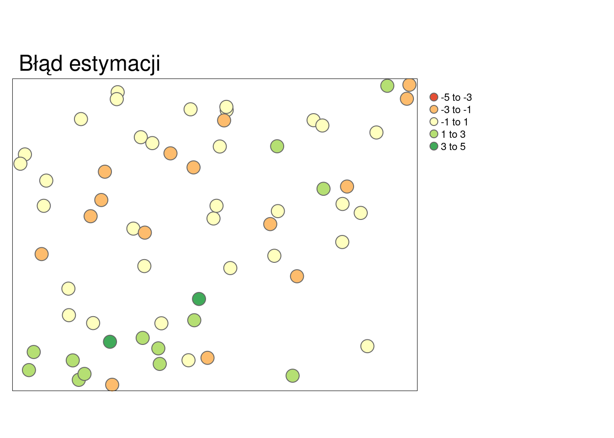
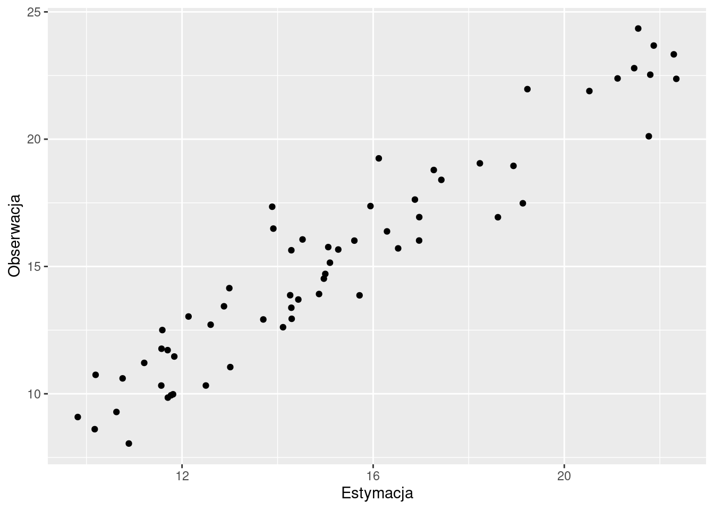
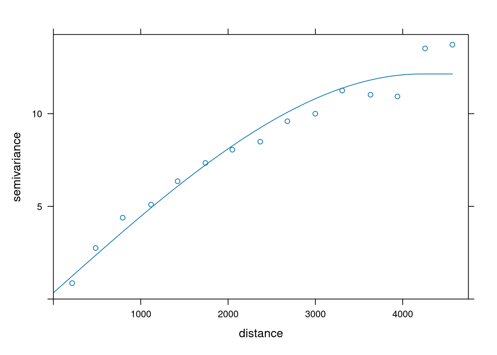
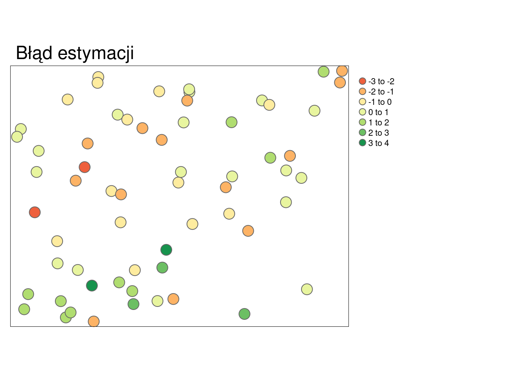
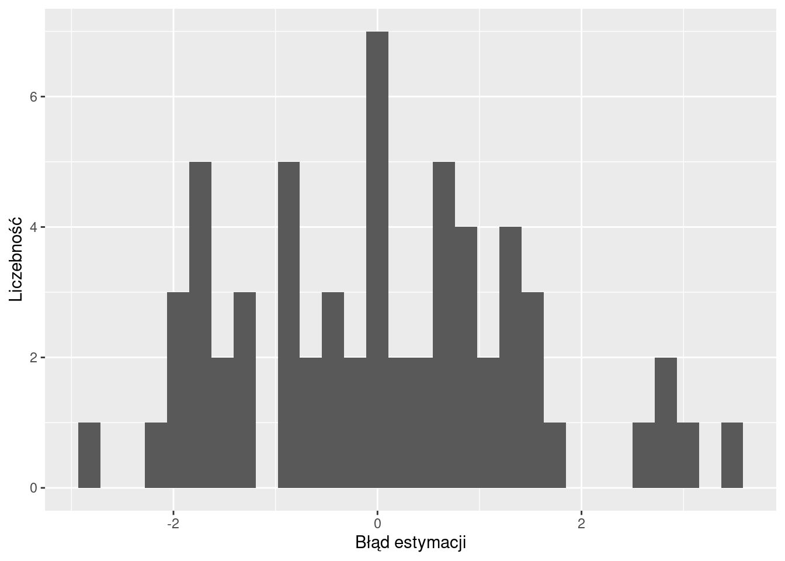
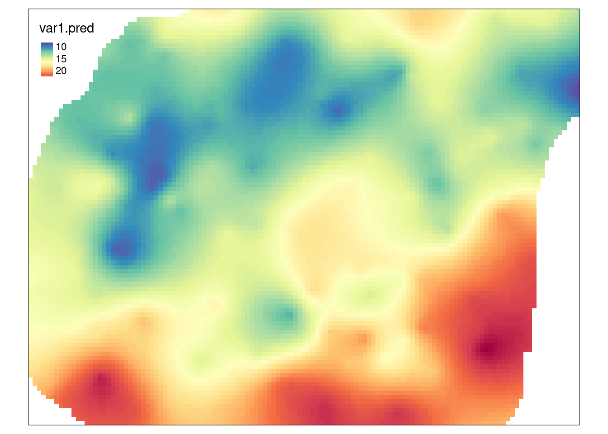
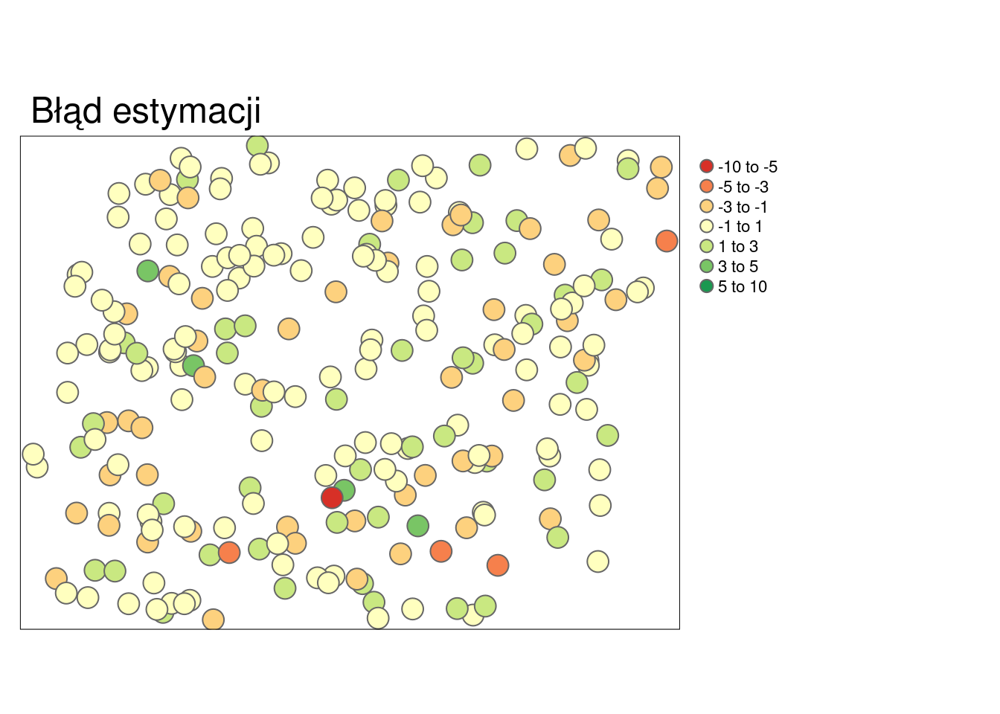
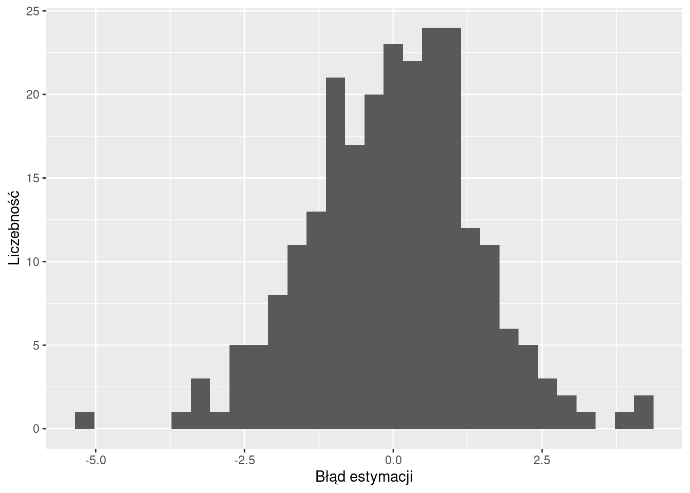
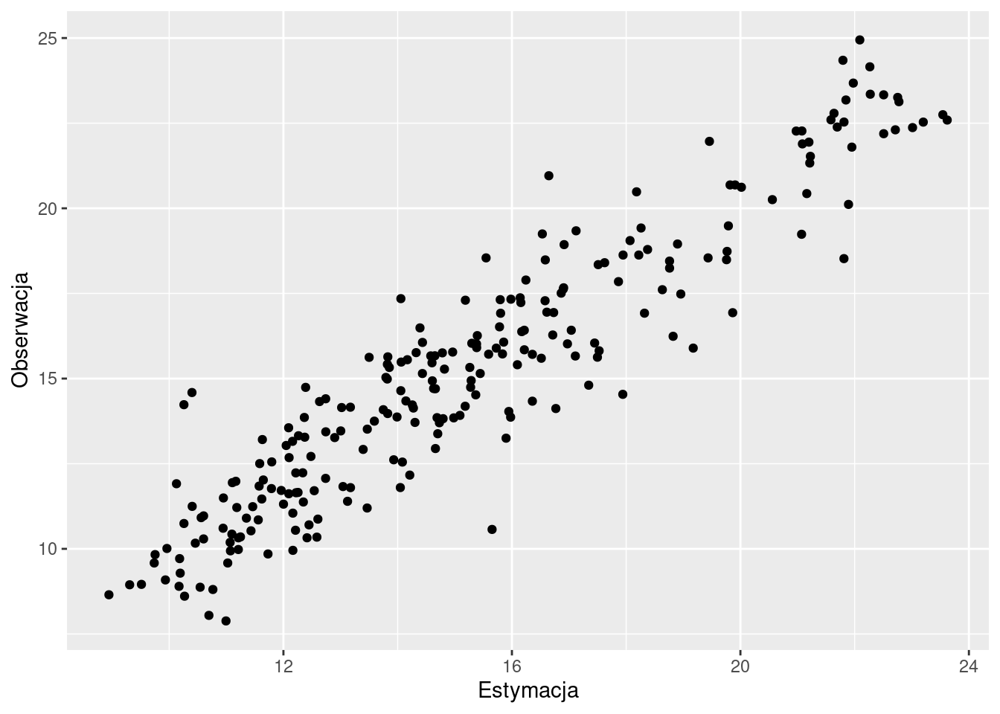
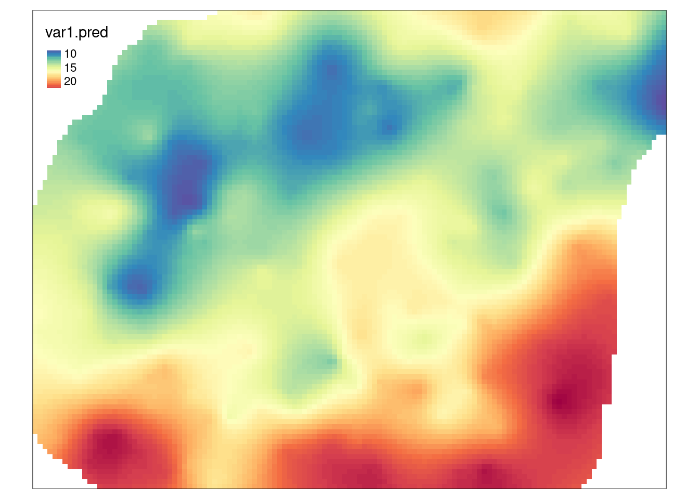

12 Ocena jakości estymacji
Odtworzenie obliczeń z tego rozdziału wymaga załączenia poniższych pakietów oraz wczytania poniższych danych:
library(sf)
library(stars)
library(gstat)
library(tmap)
library(rsample)
library(ggplot2)
library(geostatbook)
data(punkty)
data(siatka)12.1 Wizualizacja jakości estymacji
12.1.1 Mapa
Do oceny przestrzennej jakości estymacji można zastosować mapę przestawiającą błędy estymacji (rycina 12.1). Wyliczenie błędów estymacji odbywa się poprzez odjęcie od obserwacji wartości estymowanej.
blad_estymacji = obserwowane - estymacja
Rycina 12.1: Mapa przedstawiająca rozkład przestrzenny błędów estymacji.
12.1.2 Histogram
Błąd estymacji można również przedstawić na wykresach, między innymi, na histogramie (rycina 12.2).
Rycina 12.2: Rozkład wartości błędów estymacji.
12.1.3 Wykres rozrzutu
Do porównania pomiędzy wartością estymowaną a obserwowaną może również posłużyć wykres rozrzutu (rycina 12.3).

Rycina 12.3: Wykres rozrzutu porównujący rzeczywiste (obserwowane) wartości i wartości estymowane.
12.2 Statystyki jakości estymacji
12.2.1 Podstawowe statystyki
W momencie, gdy trzeba określić jakość estymacji lub porównać wyniki pomiędzy estymacjami należy zastosować tzw. statystyki jakości estymacji. Do podstawowych statystyk ocen jakości estymacji należą:
- Średni błąd estymacji (MPE, ang. mean prediction error).
- Pierwiastek błędu średniokwadratowego (RMSE, ang. root mean square error).
- Współczynnik determinacji (R2, ang. coefficient of determination).
Idealna estymacja dawałaby brak błędu oraz współczynnik determinacji pomiędzy pomiarami (całą populacją) i szacunkiem równy 1. Należy jednak zdawać sobie sprawę, że dane wejściowe są obarczone błędem/niepewnością, dlatego też w praktyce idealna estymacja nie jest osiągana. Wysokie, pojedyncze wartości błędu mogą świadczyć, np. o wystąpieniu wartości odstających.
12.2.2 Średni błąd estymacji
Średni błąd estymacji (MPE) można wyliczyć korzystając z poniższego wzoru:
\[ MPE=\frac{\sum_{i=1}^{n}(v_i - \hat{v}_i)}{n} \]
, gdzie \(v_i\) to wartość obserwowana a \(\hat{v}_i\) to wartość estymowana.
Średni błąd estymacji można też wyliczyć używając funkcji mean() w R.
MPE = mean(obserwowane - estymacja)Optymalnie wartość średniego błędu estymacji powinna być jak najbliżej 0.
12.2.3 Pierwiastek błędu średniokwadratowego
Pierwiastek błędu średniokwadratowego (RMSE) jest możliwy do wyliczenia poprzez wzór:
\[ RMSE=\sqrt{\frac{\sum_{i=1}^{n}(v_i-\hat{v}_i)^2}{n}} \]
, gdzie \(v_i\) to wartość obserwowana a \(\hat{v}_i\) to wartość estymowana.
RMSE można też wyliczyć w R.
Optymalnie wartość pierwiastka błędu średniokwadratowego powinna być jak najmniejsza.
12.2.4 Współczynnik determinacji
Współczynnik determinacji (R2) jest możliwy do wyliczenia poprzez wzór:
\[ R^2 = 1 - \frac{\sum_{i=1}^{n} (\hat v_i - v_i)^2}{\sum_{i=1}^{n} (v_i - \overline{v_i})^2} \]
, gdzie \(v_i\) to wartość obserwowana, \(\hat{v}_i\) to wartość estymowana, a \(\overline{v}\) średnia arytmetyczna wartości obserwowanych.
R2 można też wyliczyć w R.
lub
R2 = cor(obserwowane, estymacja) ^ 2Współczynnik determinacji przyjmuje wartości od 0 do 1, gdzie model jest lepszy im wartość tego współczynnika jest bliższa jedności.
12.3 Jakość wyników estymacji
12.3.1 Walidacja wyników estymacji
Dokładne dopasowanie modelu do danych może w efekcie nie dawać najlepszych wyników. Szczególnie będzie to widoczne w przypadku modelowania, w którym dane obarczone są znacznym szumem (zawierają wyraźny błąd) lub też posiadają kilka wartości odstających. W efekcie ważne jest stosowanie metod pozwalających na wybranie optymalnego modelu. Do takich metod należy, między innymi, walidacja podzbiorem (ang. jackknifing) oraz kroswalidacja (ang. crossvalidation).
12.3.2 Walidacja podzbiorem
Walidacja podzbiorem polega na podziale zbioru danych na dwa podzbiory - treningowy i testowy. Zbiór treningowy służy do stworzenia semiwariogramu empirycznego, zbudowania modelu oraz estymacji wartości. Następnie wynik estymacji porównywany jest z rzeczywistymi wartościami ze zbioru testowego. Zaletą tego podejścia jest stosowanie danych niezależnych od estymacji do oceny jakości modelu. Wadą natomiast jest konieczność posiadania (relatywnie) dużego zbioru danych.
Na poniższym przykładzie zbiór danych dzielony jest używając funkcji initial_split() z pakietu rsample.
Użycie tej funkcji powoduje obiektu zawierającego wydzielony podzbiór treningowy i testowy.
Ważną zaletą funkcji initial_split() jest to, iż w zbiorze treningowym i testowym zachowane są podobne rozkłady wartości.
W przykładzie użyto argumentu prop = 0.75, który oznacza, że 75% danych będzie należało do zbioru treningowego, a 25% do zbioru testowego.
Następnie, korzystając ze stworzonego obiektu, budowane są dwa zbiory danych - treningowy (train) oraz testowy (test).
set.seed(224)
punkty_podzial = initial_split(punkty, prop = 0.75, strata = temp)
train = training(punkty_podzial)
test = testing(punkty_podzial)Dalszym krokiem jest stworzenie semiwariogramu empirycznego oraz jego modelowanie w oparciu o zbiór treningowy (rycina 12.4).
vario = variogram(temp ~ 1, locations = train)
model = vgm(model = "Sph", nugget = 0.5)
fitted = fit.variogram(vario, model)
plot(vario, model = fitted)
Rycina 12.4: Model semiwariogramu w oparciu o zbiór testowy.
Do porównania wyników estymacji w stosunku do zbioru testowego posłuży funkcja krige().
Wcześniej wymagała ona podania wzoru, zbioru punktowego, siatki oraz modelu.
W tym przypadku jednak chcemy porównać wynik estymacji i testowy zbiór punktowy.
Dlatego też, zamiast obiektu siatki definiujemy obiekt zawierający zbiór testowy (test).
test_sk = krige(temp ~ 1,
locations = train,
newdata = test,
model = fitted,
beta = 15)## [using simple kriging]
summary(test_sk)## var1.pred var1.var geometry
## Min. : 9.818 Min. :0.8199 POINT :62
## 1st Qu.:12.226 1st Qu.:1.5630 epsg:2180 : 0
## Median :14.695 Median :2.1911 +proj=tmer...: 0
## Mean :15.255 Mean :2.2243
## 3rd Qu.:17.193 3rd Qu.:2.6707
## Max. :22.345 Max. :5.3092Uzyskane w ten sposób wyniki możemy określić używając statystyk jakości estymacji lub też wykresów (ryciny 12.5, 12.6, 12.7).
blad_estymacji_sk = test$temp - test_sk$var1.pred
summary(blad_estymacji_sk)## Min. 1st Qu. Median Mean 3rd Qu. Max.
## -2.84080 -0.94748 0.02028 0.04646 0.96024 3.46009
MPE = mean(test$temp - test_sk$var1.pred)
MPE## [1] 0.04645957## [1] 1.408219
R2 = cor(test$temp, test_sk$var1.pred) ^ 2
R2## [1] 0.9038962
test_sk$blad_estymacji_sk = blad_estymacji_sk
tm_shape(test_sk) +
tm_symbols(col = "blad_estymacji_sk", title.col = "") +
tm_layout(main.title = "Błąd estymacji", legend.outside = TRUE)
Rycina 12.5: Mapa przedstawiająca rozkład przestrzenny błędów estymacji uzyskanych używając krigingu prostego.
ggplot(test_sk, aes(blad_estymacji_sk)) +
geom_histogram() +
xlab("Błąd estymacji") +
ylab("Liczebność")
Rycina 12.6: Rozkład wartości błędów estymacji uzyskanych używając krigingu prostego.
test_sk$true = test$temp
ggplot(test_sk, aes(var1.pred, true)) +
geom_point() +
xlab("Estymacja") +
ylab("Obserwacja")Rycina 12.7: Wykres rozrzutu porównujący rzeczywiste (obserwowane) wartości i wartości estymowane uzyskane używając krigingu prostego.
W sytuacji, gdy uzyskany model jest wystarczająco dobry, możemy również uzyskać estymację dla całego obszaru z użyciem funkcji krige(), tym razem jednak podając obiekt siatki (rycina 12.8).
test_sk = krige(temp ~ 1,
locations = train,
newdata = siatka,
model = fitted,
beta = 15)## [using simple kriging]
Rycina 12.8: Estymacja uzyskana dla całego obszaru.
12.3.3 Kroswalidacja
W przypadku kroswalidacji te same dane wykorzystywane są do budowy modelu, estymacji, a następnie do oceny prognozy. Procedura kroswalidacji LOO (ang. leave-one-out cross-validation) składa się z poniższych kroków:
- Zbudowanie matematycznego modelu z dostępnych obserwacji.
- Dla każdej znanej obserwacji następuje:
- Usunięcie jej ze zbioru danych.
- Użycie modelu do wykonania estymacji w miejscu tej obserwacji.
- Wyliczenie reszty (ang. residual), czyli różnicy pomiędzy znaną wartością a estymacją.
- Podsumowanie otrzymanych wyników.
W pakiecie gstat, kroswalidacja LOO jest dostępna w funkcjach krige.cv() oraz gstat.cv().
Działają one bardzo podobnie jak funkcje krige() oraz gstat(), jednak w przeciwieństwie do nich nie wymagają podania obiektu siatki.
vario = variogram(temp ~ 1, data = punkty)
model = vgm(model = "Sph", nugget = 0.5)
fitted = fit.variogram(vario, model)
cv_sk = krige.cv(temp ~ 1,
locations = punkty,
model = fitted,
beta = 15)
summary(cv_sk)## var1.pred var1.var observed residual
## Min. : 8.945 Min. :1.154 Min. : 7.883 Min. :-5.08278
## 1st Qu.:12.258 1st Qu.:1.808 1st Qu.:11.953 1st Qu.:-0.90162
## Median :14.695 Median :2.177 Median :14.937 Median : 0.05113
## Mean :15.235 Mean :2.245 Mean :15.223 Mean :-0.01262
## 3rd Qu.:17.422 3rd Qu.:2.564 3rd Qu.:17.584 3rd Qu.: 0.85763
## Max. :23.620 Max. :5.319 Max. :24.945 Max. : 4.30996
## zscore fold geometry
## Min. :-3.555383 Min. : 1.00 POINT :242
## 1st Qu.:-0.627964 1st Qu.: 61.25 epsg:2180 : 0
## Median : 0.030835 Median :121.50 +proj=tmer...: 0
## Mean : 0.000425 Mean :121.50
## 3rd Qu.: 0.636819 3rd Qu.:181.75
## Max. : 3.140278 Max. :242.00Uzyskane w ten sposób wyniki możemy określić używając statystyk jakości estymacji lub też wykresów (ryciny 12.9, 12.10, 12.11).
summary(cv_sk$residual)## Min. 1st Qu. Median Mean 3rd Qu. Max.
## -5.08278 -0.90162 0.05113 -0.01262 0.85763 4.30996
MPE = mean(cv_sk$residual)
MPE## [1] -0.0126244## [1] 1.40683
R2 = cor(cv_sk$observed, cv_sk$var1.pred) ^ 2
R2## [1] 0.8732558
tm_shape(cv_sk) +
tm_symbols(col = "residual", title.col = "",
breaks = c(-10, -5, -3, -1, 1, 3, 5, 10)) +
tm_layout(main.title = "Błąd estymacji", legend.outside = TRUE)
Rycina 12.9: Mapa przedstawiająca rozkład przestrzenny błędów estymacji uzyskanych używając krigingu prostego i kroswalidacji.
ggplot(cv_sk, aes(residual)) +
geom_histogram() +
xlab("Błąd estymacji") +
ylab("Liczebność")
Rycina 12.10: Rozkład wartości błędów estymacji uzyskanych używając krigingu prostego i kroswalidacji.
ggplot(cv_sk, aes(var1.pred, observed)) +
geom_point() +
xlab("Estymacja") +
ylab("Obserwacja")
Rycina 12.11: Wykres rozrzutu porównujący rzeczywiste (obserwowane) wartości i wartości estymowane uzyskane używając krigingu prostego i kroswalidacji.
Podobnie jak w walidacji podzbiorem, gdy uzyskany model jest wystarczająco dobry, estymację dla całego obszaru uzyskuje się z użyciem funkcji krige() (rycina 12.12).
cv_skk = krige(temp ~ 1,
locations = punkty,
newdata = siatka,
model = fitted,
beta = 15)## [using simple kriging]
Rycina 12.12: Estymacja uzyskana dla całego obszaru po oceneniu modelu używając kroswalidacji.
12.4 Zadania
- Wydziel obiekt
punktyw taki sposób aby 70% danych należało zbioru treningowego, a 30 % danych do zbioru testowego. Zwizualizuj oba nowe zbiory danych. - Stwórz optymalne modele zmiennej
tempze zbioru treningowego używając krigingu zwykłego, kokrigingu oraz krigingu uniwersalnego. - Wykonaj estymacje korzystając z powyższych modeli. Porównaj uzyskane estymacje korzystając ze statystyk jakości estymacji oraz wizualizacji jakości estymacji i używając zbioru testowego. Który ze stworzonych modeli można uznać za najlepszy? Dlaczego?
- Porównaj uzyskane modele używając kroswalidacji. Jak wygląda rozkład reszt z uzyskanych estymacji? Który model można uznać za najlepszy oglądając rozkłady reszt?
- Stwórz optymalne modele zmiennej
tempze zbioru treningowego używając krigingu zwykłego, kokrigingu oraz krigingu uniwersalnego, ale tym razem wcześniej transformując wartości tej zmiennej używając metod opisanych w sekcji 3.6. Wykonaj estymacje korzystając z powyższych modeli. Porównaj uzyskane estymacje korzystając ze statystyk jakości estymacji oraz wizualizacji jakości estymacji i używając zbioru testowego. Który ze stworzonych modeli można uznać za najlepszy? Dlaczego? Czy któryś z uzyskanych modeli dla zmiennej po transformacji jest lepszy niż dla zmiennej przed transformacją?